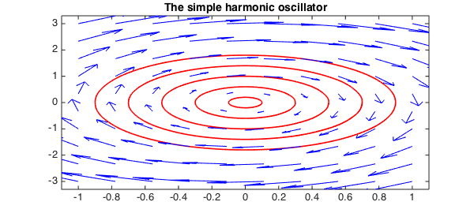
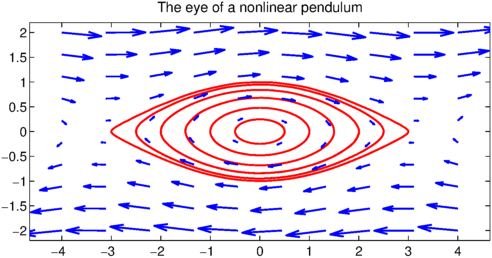
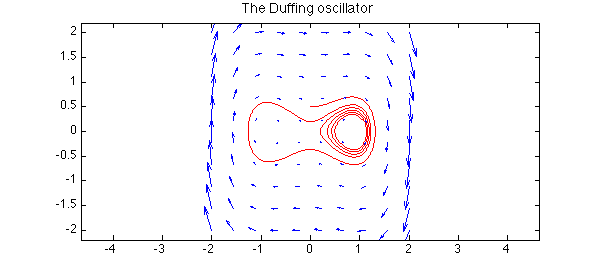

Autonomous systems
An autonomous system is a system of ordinary differential equations which does not explicitly depend on the independent variable. Such a system can be written in the form $dy(t)/dt = f(y(t))$ where $y(t)$ takes values in $R^n$. In this example we restrict ourselves to $n = 2$ so that we can plot the phase plane (vector field) and trajectory of $y(t)$ given initial conditions using Chebfun2.
Simple harmonic oscillator
We start by looking at the familiar simple harmonic oscillator.
phasedom = [-1 1 -3 3]; w = 2; % phase plane domain
F = chebfun2v(@(x,y)y,@(x,y)-w.^2.*x, phasedom);
for ic = .1:.2:1 % initial conditions
[t, y] = ode45(F,[0 4],[ic,0]); % solve autonomous system
plot(y,'r'), hold on % plot trajectory
end
quiver(F,'b'), hold on, FS = 'fontsize';
title('The simple harmonic oscillator',FS,14), hold off

The chebfun2v F is a vector field, and the overloaded ode45 command is used to compute its trajectories. Each trajectory is represented by a complex valued chebfun y parameterised by the real time variable $t$.
Nonlinear pendulum
Here is another familiar phase plane with slightly more interesting trajectories:
phasedom = [-4 4 -2 2]; % phase plane domain
F = chebfun2v(@(x,y)y,@(x,y)-sin(x)/4,phasedom);
for ic = .5:.5:3 % initial conditions
[t y] = ode45(F,[0 40],[ic,0]); % solve autonomous system
plot(y,'r'), hold on % plot trajectory
end
quiver(F,'b'), axis equal % vector field
title('The eye of a nonlinear pendulum',FS,14), hold off

Duffing oscillator
The Duffing oscillator is a nonlinear second order differential equation that models a damped oscillator. It has three critical points, two stable and one unstable. Here is the phase portrait with a carefully selected trajectory:
d = 0.04; a=1; b=-.75;
F = chebfun2v(@(x,y)y, @(x,y)-d*y - b*x - a*x.^3, [-2 2 -2 2]);
[t y] = ode45(F,[0 40],[0,.5]);
plot(y,'r'), hold on
quiver(F,'b'), axis equal
title('The Duffing oscillator',FS,14)

The critical points can be located using the roots command:
r = roots(F) % Find critical points and display them. plot(r(:,1),r(:,2),'k.','markersize',25)
r = -0.866025403784438 0 -0.000000000000000 0 0.866025403784438 0

More information
Some of the code found in this Example can also be found in [1] along with additional information about autonomous systems in Chebfun2.
References
- A. Townsend and L. N. Trefethen, An extension of Chebfun to two dimensions, SIAM Journal on Scientific Computing, 35 (2013), C495-C518.